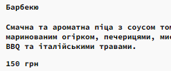

Опис предметного середовища
Тема, мета, місце розташування лаби
Селектори
Селектори тегу
Селектори классу
Слектори ідентифікаторів
Слектори інші
Висновки
Селектори класу в CSS використовуються для:
- Вибору елементів HTML на основі їх класу.
- Застосування стилів до цих елементів.
- Створення більш складних та гнучких макетів веб-сторінок.
Як використовувати селектори класу:
- В CSS-файлі додайте крапку (.) перед назвою класу.
- Вкажіть стилі, які хочете застосувати до елементів з цим класом.
<div class="menu-text">
<h4>Барбекю</h4>
<p>
Смачна та ароматна піца з соусом томато, моцарелою...
</p>
<span class="price">150 грн</span>
</div>
.menu-text {
color: black;
text-decoration: none;
}

Цей код CSS зробить колір тексту чорним і прибирає всі декорації з тексту.